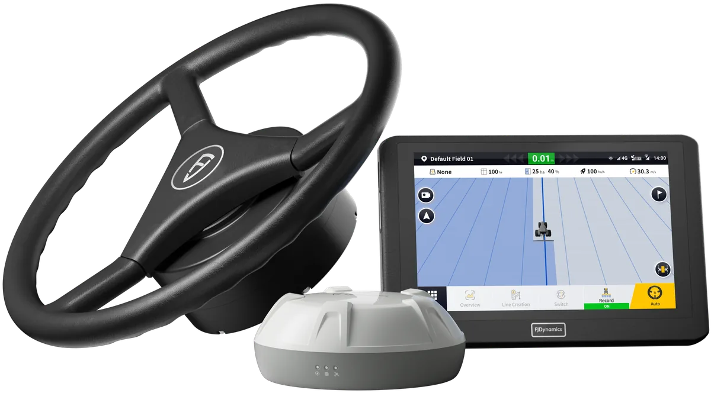

Autosterowanie elektryczne
AT2 – autosterowanie w zasięgu ręki
AT2 to zestaw montowany w kabinie: elektryczna kierownica, terminal i antena GNSS. Po wyznaczeniu linii system przejmuje prowadzenie, a operator pilnuje maszyny, narzędzia i uwroci.
Dla kogo?
Dla mniejszych i średnich gospodarstw, gdzie liczy się prostota obsługi i możliwość przenoszenia zestawu między ciągnikami.
- stabilne prowadzenie po prostych i na uwrociach,
- mniej zmęczenia przy długich dniach pracy,
- łatwe przenoszenie zestawu między ciągnikami,
- czytelny ekran z podglądem przejazdów.